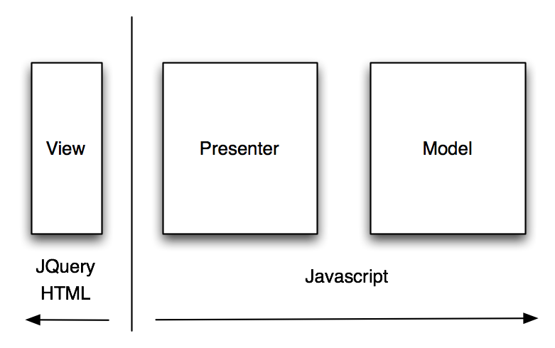
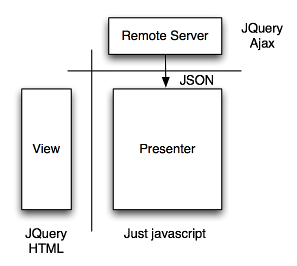
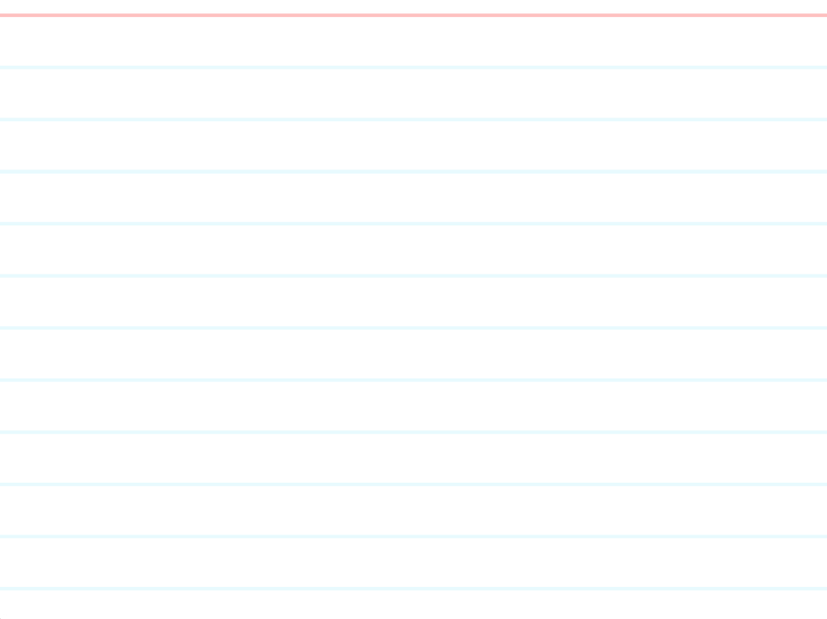

TDDing Javascript
@patkua
http://www.thekua.com/atwork
23 Jan 2011
@patkua
http://www.thekua.com/atwork
23 Jan 2011
When you follow the three rules of TDD, all your code will be testable by definition!

<script type='text/javascript'>
var module = {};
module.buildView = function() {
var x = {};
// ... other methods
x.setAnswer = function(answer) {
$("#answer").val(answer);
};
x.getAnswer = function() {
return $("#answer").val();
};
x.showAnswer = function() {
$("#answer").show();
};
x.hideAnswer = function() {
$("#answer").hide();
};
return x;
}
</script>

<script type='text/javascript'>
var module = {};
module.serverBoundary = function() {
var x = {};
// ... other methods
x.fetchQuestion = function(dataHandler) {
$.get("/remoteCall").onSuccess(function(data) {
dataHandler(data);
});
};
return x;
}
</script>
Separates what you use from where you get it

<script type='text/javascript'>
var module = {};
// note that presenter doesn't care if it uses
// real dependencies or test-doubles
module.buildPresenter = function(view, remoteService) {
var x = {};
x.aPresenterMethod = function() {
// I can use my dependencies here
};
return x;
};
</script>
In order to test my knowledge and (eventually score points)
As a Quizlet player
I want a random question to be shown
Notes: Calls an ajax service. Shows a loader whilst waiting. Loader is hidden on success. Input of answer not part of this story. Answers are always textual input and there is only ever one correct answer. Example of service:
Request: GET http://server:8080/nextQuestion
Response: 200 OK
{
"question" : "What is the capital of London?",
"answer" : "London"
}

In order to feel like a trivia guru
As a Quizlet player
I want some feedback when I enter the correct answer
Notes: Story where input box is first added. A tick is shown when a user has entered the answer correctly
In order to further develop my trivia guruness
As a Quizlet player
I want the option to fetch another question
Notes: Story where we add a button to get the next question
In order to deepen my trivia knowledge
As a Quizlet player
I want an option to show me the real answer
Notes: A new button should be added. On click of the button, it should reveal the answer, hide the answer input box and show the button to progress to the next question
In order to make entering answers easier
As a Quizlet player
I want white spaces and case to be ignored
Examples if the answer was 'London'. It should match

This
work by Patrick Kua is licensed under a Creative Commons Attribution 3.0
Unported License
Contact @patkua for more information